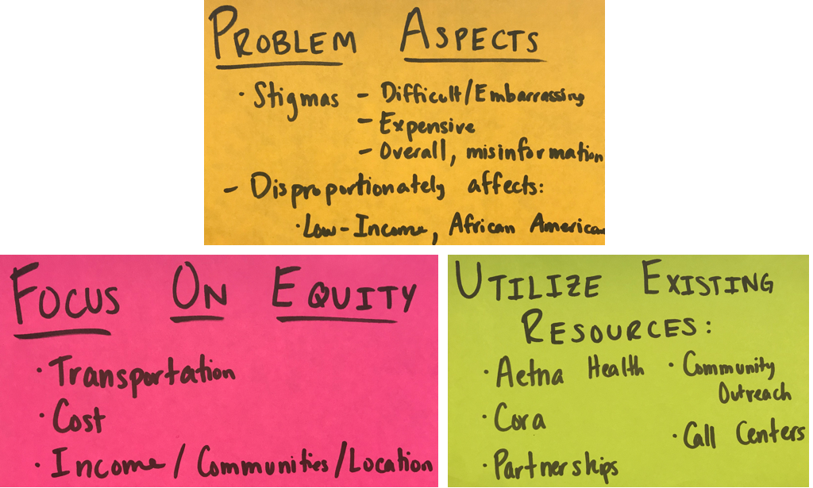
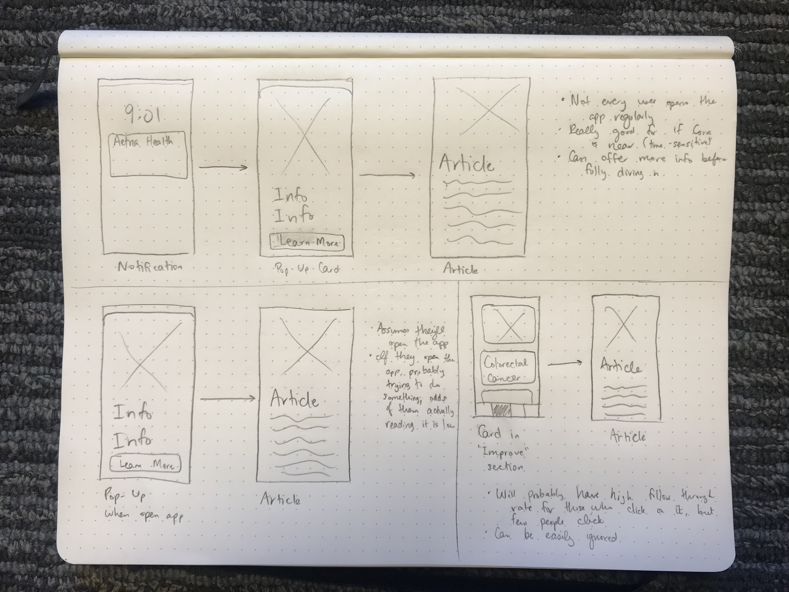
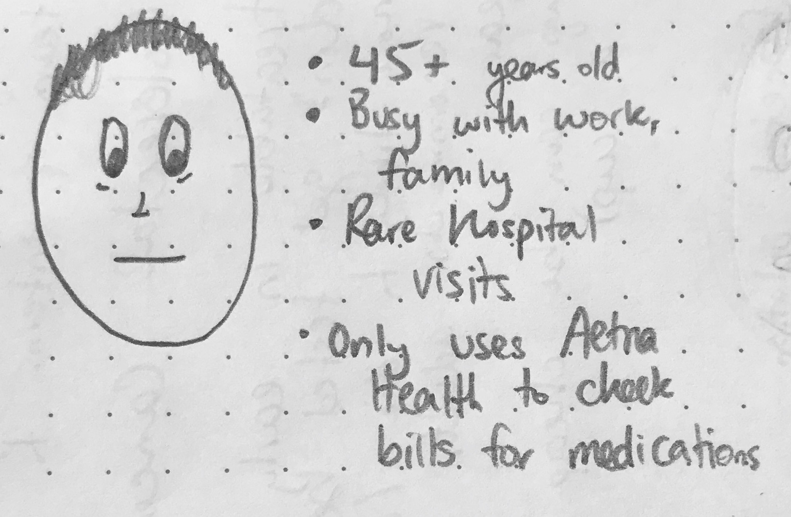
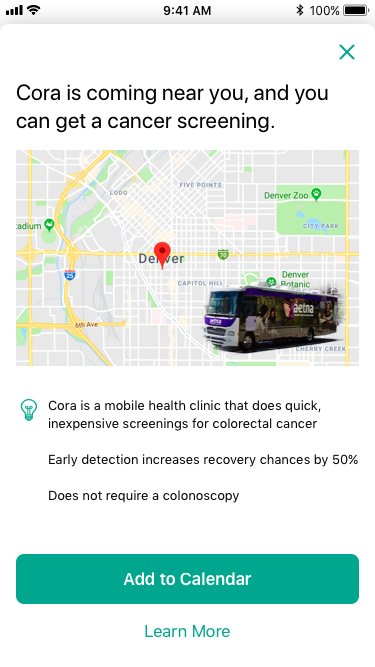
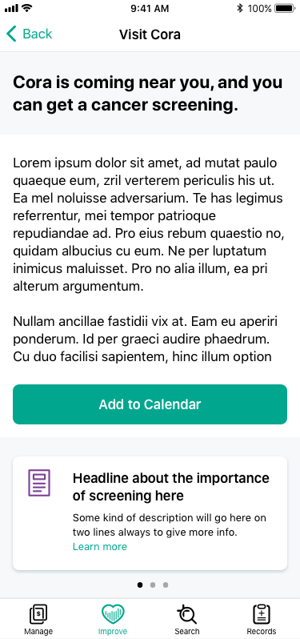

Aetna Health
Easily Manage your Healthcare
This past summer summer, I had the pleasure to work for Aetna Digital in Denver, Colorado on their design team as a user interface design intern. The team designated itself as Team MISL - Make Insurance Suck Less. Every member was passionate about creating a mobile application that quickly and easily allows Aetna members to view their coverage, claims, find doctors, all while helping users form healthier habits.
In my role, I worked with the team to ensure design standards and the Aetna Health design system were followed, I created a full prototype of the application to be used by the sales team, and I created a user flow to help encourage members to be screened for colorectal cancer.
The Aetna Health application is available on the AppStore, Playstore, and web.
in this case study
Team
Product & Engineering: iOS, Android, and Web development teams
UI Design: 2 Senior UI Designers, 2 UI Designers, 1 UI Manager, me
Copy: 1 Copy Manager, 2 Writers
UX Design: 2 Senior UX Designers, 2 UX Designers, 1 UX Manager
UX Research: 1 UX Research Manager, 2 UX Researchers, 1 Intern
Accessibility: 3 testers
MY ROLE
UI Design Intern
Tools
Sketch, InVision, GitHub, OTHER THING OMG REMEMBER IT
Timeline
June - August, 2018
I) Researching colorectal cancer
Learning about barriers, pain points, and stigmas against colorectal cancer screenings
Starting this project, the team knew that colorectal cancer is easily treatable in its early stages, but many people don't get screened until it's in later stages that have a significantly lower survival rate. We went into our research asking the following questions:
- What obstacles exist for people who want to receive a screening?
- What stigmas surround colorectal screenings?
- How important is early detection?
- Are there alternative forms of screenings besides colonoscopies?
obstacles
Our research found that the biggest obstacle for folks are (1) transportation to and from the screening location, (2) cost of the screening, and (3) stigmas surrounding the screening. Additionally, we found these problems disproportionately affect individuals from african american and hispanic populations.
(Source)Stigmas
Numerous stigmas exist around colorectal cancer screenings:
(Source)
- The test is difficult, painful, or embarrassing
- You only need to be screened if you have signs or symptoms
- Screenings are expensive and take a large amount of time to complete
- Because there is no family history with colorectal cancer, they don't believe they need to be screened
Early Detection Importance
Early detection can find precancerous polyps, allowing for surgery to easily remove them before they turn cancerous. This is a quick surgery without much need for recovery, or risk in general. Once a polyp turns cancerous, it usually spreads quickly and leads to chemo, more intensive surgeries, and an increasing chance of death.
(Source)colonoscopy alternatives
Though a colonoscopy is the most extensive form of screening, other screenings exist. Some can be administered at home, while others involve sending samples to labs for further detection. None are as thorough as a colonoscopy, though, but they still help more people get screened.
(Source)
II) Brainstorming solutions
How can we use Aetna's existing infrastructure to help more people get screened?
Using the information, we sought to come up with solutions to this problem. Before artificially limiting ourselves, we came up with numerous ideas, ranging from simple to extraordinarily complex. Some examples include partnering with Uber and Lyft to provide free transportation to and from the screening, create an Aetna-based advertisement campaign of fliers and television spots tackling stigmas, using the Aetna Health app to promote awareness, or sending a bus to various communities with the simpler screenings. To narrow the ideas, we developed the following criteria:

Using these criteria, we came to our solution. It has two parts: one for increasing availability of the screenings, and one for spreading awareness.
increasing availability
Aetna has a bus named "Cora" that it sends to communities to spread awareness for various services and health goals. The first part of our solution involved adding screenings to this truck; it already travels to communities of various ethnic demographics and populations, so adding our screenings to it both takes advantage of Aetna's pre-existing infrastructure and services, and helps those folks who need it most.
Spreading Awareness
The second step of the solution is one that I was most excited for; working on Aetna Health regularly with the design team, I knew the benefits and power it has to help Aetna members. In the application, there are user flows called "Next Best Action" stories. These are notifications, articles, pop-ups, and other sections of the application tasked with helping users form healthful, beneficial habits or complete necessary medical tasks.
Increasing awareness and educating about colorectal cancer screenings fits these goals and objectives perfectly. These notifications are highly customizable, allowing us to have at least 2 types of notifications: one for if a Cora truck is near a member's community, and one for general education.
Additionally, because the Aetna Health application is unique to each user and their insurance coverage, the pop-ups can be customized with information relevant to their demographic and geographic areas.
III) Encouraging Healthy Habits
Designing a user flow to encourage screenings using Aetna Health's design standards
At this point in the project, I was tasked with designing the user flow and interface for notifying users about the Cora truck. To start this process, I looked through the other Next Best Action flows and how they integrate with other components of the app. (My task prior to this for the internship was creating a fully-featured prototype for the sales team that enforced Aetna Health's design standards. Needless to say, I was well-versed in the features of the Aetna Health app and its features.)
I found that there were 3 typical Next Best Action flows:

To narrow down the options and select the best user flow, I created a user story for our target user. It acknowledges the realities of those who typically use the Aetna Health app, as well as those people we're targeting to get colorectal cancer screenings:

With this user in mind, I elected to go with the first flow. The main feature of this flow is the notification; our target user will rarely open the application; for users who should get screened on their own, this could work, but the Cora truck is only in communities for short stretches of time. Users need to know that it's available within a timely manner.
This flow does include the article where we'll be able to summarize the importance of colorectal cancer screenings and clear up misconceptions associated with screenings, as well as gives us the ability to customize the information for each user's demographic and location.
Designing the notification
The largest hurdle in designing the notification was deciding what the notification would say; Aetna Health has a standard notification template that all notifications follow. We wanted Cora to be utilized by those who live in areas that it visits, but understood that not every Aetna Health user would be in those areas. For these reasons, we chose to follow two routes with the notification: one for Cora, and one for general awareness.
Cora Truck is near
Notification is for those who:
- Live within 10 miles of Cora destination
- Greater than 45 years old
- Have not received screening in previous 10 years
Goals of the notification:
- Display time, date, and location of Cora stop
- Emphasize importance of screening
- Intrigue user to learn more
Notification design:

Next Step:
- Display a pop-up with a map and further information and ability to add the event to a calendar
general awareness
Notification is for those who:
- Greater than 45 years old
- Have not received screening in previous 10 years
Goals of the notification:
- Display general distance, time of screening
- Emphasize importance of screening
- Intrigue user to learn more
Notification design:

Next Step:
- Display an article that tackles stigmas and persuades the user to schedule an appointment with their medical center
Designing the pop-up
The pop-up has much more flexibility than the notification for actually designing a user interface. Based on the Aetna Health design standards, these pop-ups have a large image covering the top portion of the screen, followed by a few bullet points and a large call-to-action. I followed this design because it helps the team meet our goals; the large visual is appealing and makes it easy to display information in a quick, easily-readable way.
The first design decision that arose was what to display for the image. The image should quickly convey where the Cora truck will be located, and should add some sort of trust in the truck, itself. Because of this, I decided to go with a large map with a location pin, with an image of the Cora truck in the lower-left corner. The remaining information on the screen displays the importance screening, followed by Aetna Health's large, iOS call-to-action button.

The article
For either user flow, the article was out of my hands. The copy team is in charge of producing this information, so I simply designed the user interface for each of them. The information is expected to be short and succinct with more resources available. I still wanted users to have a quick call-to-action, so the information and resources are split between two different containers.

Lessons learned
Building creative confidence and participating in a truly collaborative design environment
Working at Aetna Digital on the design team was an incredible experience. Putting to practice the skills that I've learned in a practical working environment was eye-opening. Every design decision was well thought-out, collaboration among designers was prevalent, and the importance of accessibility was always present.
Throughout my summer, in addition to the user flow described above, I enforced design standards and updated numerous screens to follow them; I worked with the sales team to create a fully-featured prototype that they use to recruit new members to Aetna; and I worked with my supervisor on his user stories to design interactions and interfaces for the web application.
The two months spent in Denver dramatically increased my creative confidence and knowledge on working on a design team to create a truly beneficial application. The majority of user stories required research and meetings to learn about how Aetna insurance works, and the user experience research team constantly sent studies for us to check our assumptions. I walked away from the internship a much more competent designer than before, with a much stronger foundation to build my skills from.